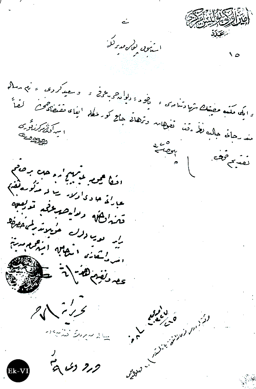
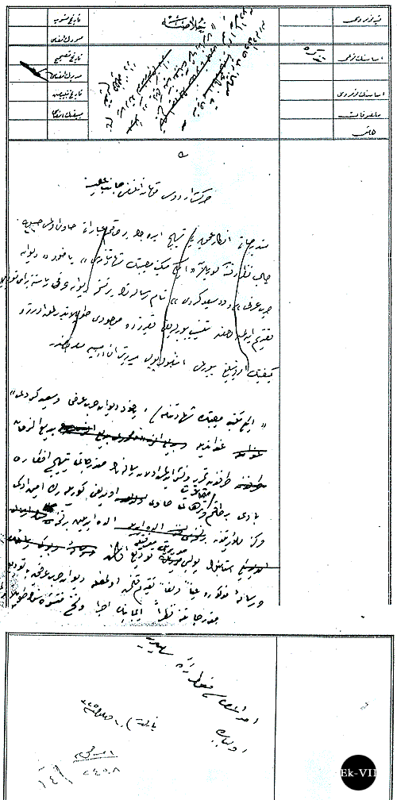
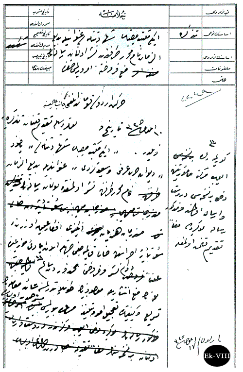
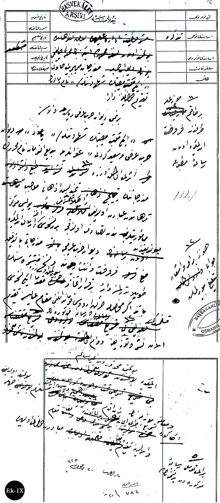

|
Divan-ý Harb-i Örfi eserinin toplattýrýlmasý talebi |
  
|
|
Divan-ý Harb-i Örfi eserinin toplattýrýlmasý talebi |
|
Divan-ý Harb-i Örfi eserinin toplattýrýlmasý talebi
Eminönü Polis Merkezi'nden Ýstanbul Polis Müdürlüðü'ne toplatma talebi;

Eminönü Polis Merkezi:
Ýstanbul Polis Müdürlüðüne,
"Ýki Mekteb-i Musibetin Þehâdetnâmesi" yahud "Divân-ý Harb-i Örfî ve Said-i Kürdî" nâm risâle münderecâtý câlib-i nazar-ý dikkat tefevvühât ve terhâtý cami' görülmekle ifây-ý muktezâsý zýmnýnda leffen takdim kýlýndý. 5 Eylül 1325/18 Eylül 1909.
Eminönü Merkez Memuru
Efkâr-ý Umûmiyeyi tehyic edecek bir takým ibârâtý havî olan risâle-i mezkure takdim kýlýnmýþ olmakla ve Divân-ý Harbî Örfiye tevdiiyle beraber bu risâlelerin toplattýrýlmasý hakkýnda emr-i iþ'arý istirhamýyla Emniyet-i Umûmiye Müdüriyeti'ne arz ve tefhim olunur. 10 Eylül 1325/23 Eylül 1909.
Hareket Ordusu Kumandanlýðý'na yazýlmýþtýr: 10 Eylül 1325.
DH.EUM.THR., nr.5/7-3, 8 Ramazan 1327

Dahiliye Nezareti'nden Hareket Ordusu Komutanlýðý'na toplatma talebi;

Hulasa
Münderecat-ý mühimmeye havi olarak neþr edilmiþ olan "Ýki Mekteb-i Musibetin Þehadetnâmesi" nam risâlenin takdim olunduðuna dair.
Hareket Ordusu Kumandanlýðý Cânib-i Âlisine,
Münderecâtý efkâr-ý umûmiyeyi tehyic edecek birtakým ibaratý hâvi olmasý hasebiyle câlib-i nazar-ý dikkat görülen “Ýki Mekteb-i Musibetin Þehadetnâmesi” yahud “Divan-ý Harb-i Örfî” ve “Said-i Kürdî” nam risâlatýn bir nüsha Divân-ý Örfî yanýna berây-ý tevdi’ takdim edilmiþ ve hatta tensib buyurulduðu takdirde mevcudu toplattýrýlmak keyfiyetin emir ve teblið buyurulmasý. Ýþbu rapor ... dosya maruzdur.
"Ýki Mekteb-i Musibetin Þehâdetnâmesi yahud Divân-ý Harb-i Örfi ve Said-i Kürdî" ünvanýyla Bediüzzaman tarafýndan tahrir ve neþr edilmiþ olan risâlenin münderecâtý tehyic-i efkâr-ý bâdi bir takým makâlât ve terhâtý havî olduðu görülerek Eminönü Merkez Memuriyeti'ne elde edilen bir nüsha Ýstanbul Polis Müdiriyeti marifetiyle tevdi' edilmiþ ve risale-i mezkurenin aynen ve leffen takdim kýlýnmýþ olmakla Divân-ý Harb-i Örfî'ye ba-tevdi' münderecâtýna nazaran icabýnýn icra ve nüsha-i münteþiresinin toplattýrýlmasýnýn emir ve itasý menut-u irade-i samileridir. Olbabda.
Yazýldý. 10 Eylül 1325/23 Eylül 1909.
BOA.,DH.EUM.THR., nr.5/7-1,2.
Dahiliye Nezareti'nden Hareket Ordusu Komutanlýðý'na toplatma talebine Zeyil;

Hulasa
Ýki mekteb-i musibet þehâdetnâmesi ünvanýyla Bediüzzaman nam muharrir tarafýndan neþr olunan risalenin men'-i fürûhtuna emir verilmesi hakkýnda.
Hareket Ordusu Kumandanlýðý Cânib-i Âlisine,
10 Eylül 1325 tarih ve numarasýyla takdim kýlýnan tezkireye zeyldir. "Ýki mekteb-i Musbetin Þehadetnamesi" yahud "Divan-ý Harb-i Örfî ve Said-i Kürdî" ünvanlarýyla Bediüzzaman nam muharrir tarafýndan neþr olunmakta bulunan risâlenin münderecatý hezeyan-ý müzekkiri efkâr-ý umûmiye üzerinde su-i tesir icrasýnýn hâli kalmayacaðý cihetle, ... müvezziinin alenen devam-ý neþr ve fürûhtu mahzurdan sâlim görülmeyerek Eyüp Merkez Memuriyetine dahi bir nüshasý derderst ve irsal olunmuþ ve mezkur risale müzekkiresi leffen takdim kýlýnmýþ olmakla, bunun men' intiþarýyla mevcudunun toplattýrýlmasýna ait muamelenin tesri ve keyfiyetinin tacili emr-i tebliðine müsaade buyurulmasý müsterhamdýr. Olbabda.17 Eylül 1325/30 Eylül 1909.
BOA., DH.EUM.THR., nr.5/7-1, 8 Ramazan 1327.
Dahiliye Nezareti'nden Hareket Ordusu Komutanlýðý'na tekraren toplatma talebi isteði;

Hulasa
Münderecât-ý mühimmeyi havi Ýki Mekteb-i Musibetin Þehadetnamesi nam risalenin takdim olunduðuna dair.
Birinci Divân-ý Harb-i Örfî Riyâset-i Vâlâsýna,
"Ýki Mekteb-i Musibetin Þehadetnâmesi" yahud "Divân-ý Harb-i Örfi ve Said-i Kürdî" ünvanlarýyla Bediüzzaman nam muharririn eseri olmak üzere bir takým müz’ile tarafýndan füruûht edilmekte olan risale-i matbua münderecatýnýn tehyic-i ezhân-ý mucib terhâttan ibaret olduðu anlaþýlmasýna mebni, Polis Merkez Memuriyetlerinden tesadüf olundukça birer nüshasý ahz ve irsal edilmekte bulunduðundan Divân-ý Harb-i Örfice münderecâtý bittetkik füruht ve intiþara ve nüsha-i münteþiresinin toplattýrýlmasýna dair bir karar ittihaz buyurulmak üzere mukaddema iki nüshasý ve ba tezâkir-i mahsusa Hareket Ordusu Kumandanlýðý makam-ý âlisine takdim kýlýnmýþtý. Henüz bir emr ve iþ'ar cevaben teblið buyurulmamýþ ve risâle-i mezkurenin ilan neþr ve tevzi'ine devam edilmekte bulunmasý mahzurdan gayr-i salim ve muamele-i lazimenin bir an akdem derpiþ edilmesi müstelzim bulunmuþ olduðu cihetle, ona göre tesri-i icray-ý icabýna beray-ý tevessül risale-i mezkureden bir nüshasýnýn da leffen makam-ý vâlâlarýna takdimine mübâderet olundu. Olbabda.20 Eylül 1325/3 Ekim 1909.
BOA., DH.EUM.THR., nr.6/68-2, 19 Ramazan 1327/4 Ekim 1909.